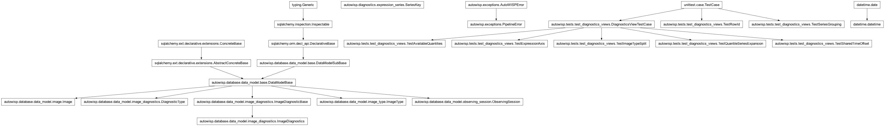
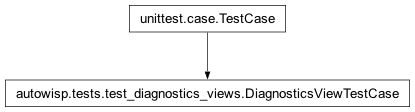
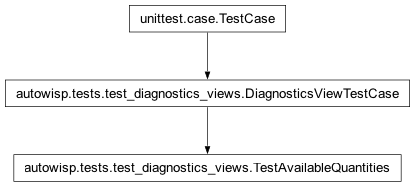
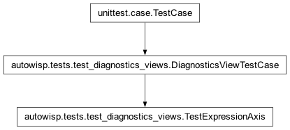
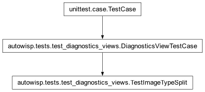
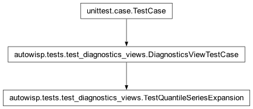
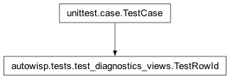
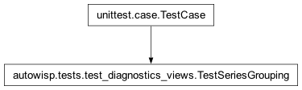
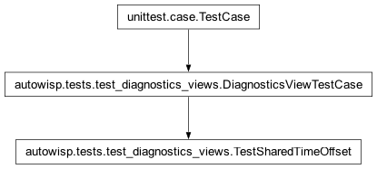

autowisp.tests.test_diagnostics_views module
Class Inheritance Diagram

Characterization tests for the BUI diagnostics view modules.
These pin the behaviours that must survive merging
image_diagnostics_views and diag_vs_diag_views into a single
x-versus-y path: how the pixel_quantiles pseudo-name expands into
series, and how the time-series figure offsets and groups its series. They
are written against the current code, so they must pass before the merge
starts.
Uses a throwaway project database, following test_error_render.
- class autowisp.tests.test_diagnostics_views.DiagnosticsViewTestCase(methodName='runTest')[source]
Bases:
TestCase
Base creating one throwaway project database holding two nights.
- classmethod _fill_database()[source]
Create two observing sessions, the second holding two image types.
Every frame records
bg_centerin channelR; only object frames record the quantiles, which is the ordinary case of a diagnostic that is not defined for every type. Provenance foreign keys are left dangling, as SQLite does not enforce them and the diagnostics queries only ever join back toobserving_sessionandimage_type.
- images_of = {}
{(night, image_type): [image_id, ...]}, in JD order, so a test can say which images a series is supposed to be built from.
- rows_for(x_diagnostic, y_diagnostic, expressions=None)[source]
Return
{(session, type, quantile): row}for an axis pair.Keyed by the group rather than by the whole series, a row having no channels until something binds them.
- class autowisp.tests.test_diagnostics_views.TestAvailableQuantities(methodName='runTest')[source]
Bases:
DiagnosticsViewTestCase
What the two axis selectors offer, given what this project holds.
Availability rather than validity: every stored expression is valid in every project, so the only question a selector can usefully ask is whether the diagnostics an expression reaches have actually been recorded here.
A stored cycle must not stop the plot page rendering.
Saying what is wrong with it belongs to the management page; here the only sane answer is not to offer it.
- test_a_concrete_quantile_is_judged_against_the_raw_names()[source]
Which is why the family collapse happens after this check.
Against the collapsed list
pixel_q999would look unrecorded and a perfectly drawable expression would go missing from the selector.
Availability follows the whole subtree, not the direct names.
- test_a_jd_only_expression_is_always_available()[source]
jdexists for every image of the canonical list.
A typo no version of AutoWISP defines, rather than a cycle.
Not an error –
astrom_residualis real, merely unrecorded.The distinction the whole design rests on: this expression is valid here and would be offered in a project that had run plate solving.
- test_expression_offered_where_its_inputs_are_recorded()[source]
The ordinary case, and the composed one behind it.
- test_expressions_join_the_same_flat_list()[source]
Not a second list beside it.
An axis reads one name, and a recorded diagnostic is an expression of itself as far as everything downstream is concerned – which is the same flat name space that stops an expression taking a diagnostic’s name.
- class autowisp.tests.test_diagnostics_views.TestExpressionAxis(methodName='runTest')[source]
Bases:
DiagnosticsViewTestCase
An expression selected for an axis, as a diagnostic would be.
The library is passed in rather than stored, which is the arrangement that lets these run against a project database alone: what the view does with an expression does not depend on where it was kept.
- library = {'q_ratio': 'pixel_q999[1] / pixel_q99[1]', 'rel_bg': 'bg_center[1] - nanmedian(bg_center[1])', 'scaled_bg': 'rel_bg[1] * 10'}
Referenced by every test here;
bg_centeris recorded for both image types, so the availability answer is interesting.
- test_a_composed_expression_reaches_through()[source]
scaled_bgneeds whatrel_bgneeds, transitively.
- test_an_expression_against_a_diagnostic()[source]
Both axes at once, one of each kind, sharing a query.
- test_an_unknown_name_is_refused()[source]
Neither a diagnostic nor an expression, so nothing to plot.
- test_offered_wherever_its_diagnostics_are()[source]
Availability follows what the expression reaches, not its name.
Nothing records a diagnostic called
rel_bg; the series it can be drawn for are those recording thebg_centerit is built from.
- class autowisp.tests.test_diagnostics_views.TestImageTypeSplit(methodName='runTest')[source]
Bases:
DiagnosticsViewTestCase
A session holding several image types yields a series per type.
- test_a_type_without_the_diagnostic_is_absent()[source]
Only object frames record the quantiles, so only they appear.
- test_canonical_list_holds_only_its_own_type()[source]
The alignment the whole design rests on is per type.
Every array is padded onto this list, so if it mixed types then so would every quantity built against it.
- class autowisp.tests.test_diagnostics_views.TestQuantileSeriesExpansion(methodName='runTest')[source]
Bases:
DiagnosticsViewTestCase
pixel_quantilesexpands to one series perpixel_q*.On either axis, since the expansion happens where the series are built rather than per axis.
- class autowisp.tests.test_diagnostics_views.TestRowId(methodName='runTest')[source]
Bases:
TestCase
The row id, a round trip through the client and back.
It becomes an HTML element id, four more element ids are built from it, and it keys the
datasetsobject the client posts back – so it has to survive all of that as an opaque string. What it deliberately does not carry is the channels: those are chosen in the row, and an id that changed as they were would take every element id with it.- round_trip(session_id, image_type, quantile_name, ordinal=0)[source]
Return the group recovered from the id built from these.
- test_an_ambiguous_field_is_refused()[source]
Failing loudly beats an id that silently pairs wrong data.
- test_quantile_row()[source]
The quantile survives despite containing underscores.
This is what the previous encoding could not do without guessing which underscores separated fields and which belonged to the name.
- test_siblings_differ_by_their_ordinal()[source]
A group holds a row per binding, and they share everything else.
- test_the_image_type_is_part_of_the_identity()[source]
Two types in one session must not collide on one id.
- class autowisp.tests.test_diagnostics_views.TestSeriesGrouping(methodName='runTest')[source]
Bases:
TestCase
group_series_by_x_overlapsplits only non-overlapping ranges.
Bases:
DiagnosticsViewTestCase
The x-offset is one value for the whole figure, not per series.
Return the x arrays that reach the per-series plotting call.
plot_image_diagnostic_seriesis mocked out, which both captures the offset values and avoidsreverse()needing Django settings.
Return where each plotted series begins on the shared x axis.
Guard the exact regression the merge could introduce.
Zeroing each series on its own would start every one of them at 0, collapsing the day between the two nights. The second night’s series keep that day, wherever in the night each one begins.
One offset for the figure, so exactly one series lands on 0.
- autowisp.tests.test_diagnostics_views._diagnostic_names = ('bg_center', 'pixel_q99', 'pixel_q999')
the lazy database initialization behind
set_project_homecreates the schema but seeds nodiagnostic_typerows, and depending on that would couple these tests to project-creation behaviour they are not about.- Type:
Every diagnostic the fixture records. All are created explicitly
- autowisp.tests.test_diagnostics_views._first_bg_center = {'flat': 500.0, 'object': 100.0}
bg_centerof the first frame of each type. Far enough apart that a median over one type cannot be confused with a median over the mixture.
- autowisp.tests.test_diagnostics_views._first_jd = 2460000.5
JD of the first image of the first night.
- autowisp.tests.test_diagnostics_views._frames_per_night = ({'object': 3}, {'flat': 2, 'object': 3})
Frames of each type per night. Only the second night is mixed, which is what lets these tests tell a per-type series from one that lumps a whole session together; leaving the first night single-type keeps the plain one-series-per-night cases readable.
- autowisp.tests.test_diagnostics_views._night_separation = 1.0
Nights are one day apart, so their JD ranges cannot overlap.
- autowisp.tests.test_diagnostics_views._quantile_names = ('pixel_q99', 'pixel_q999')
The quantile diagnostics, which expand to one series each.